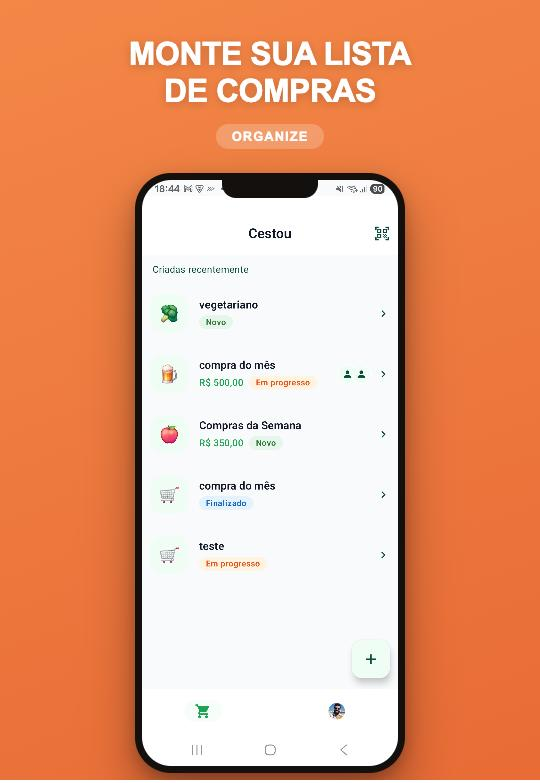
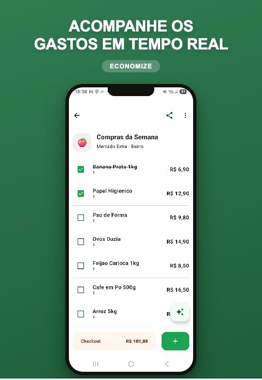
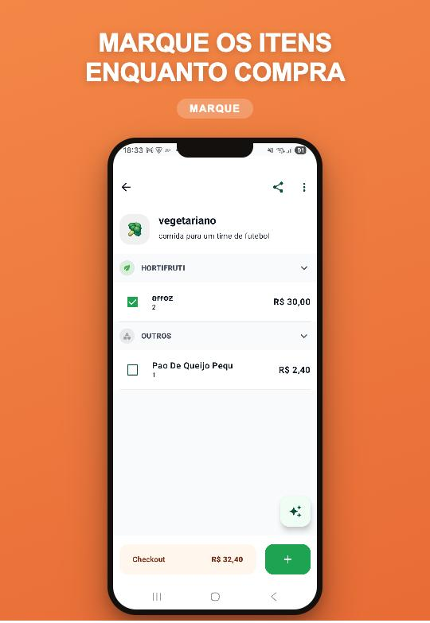
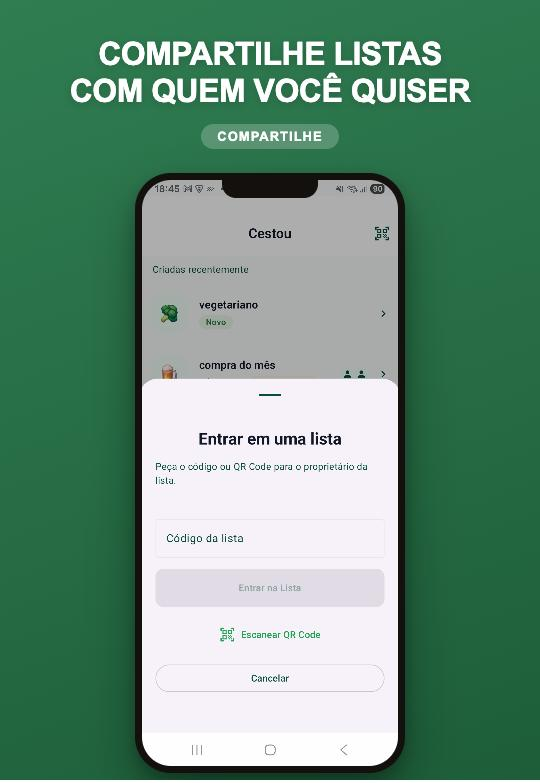
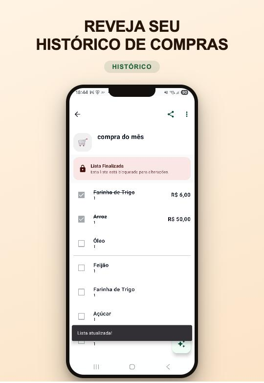

A lista de compras da família, sempre atualizada.
Monte a lista junto com quem mora com você, defina um orçamento e acompanhe o total enquanto marca os itens no mercado.
Para Android e Wear OS. O app está em fase beta: sua opinião ajuda a melhorar.

Tudo o que a compra do mês precisa
Do planejamento em casa ao caixa do mercado, sem papel e sem planilha.
-
Listas compartilhadas Pro
Convide a família com um código ou QR Code. Todo mundo vê as mudanças na hora, os membros são avisados quando a lista muda e cada item mostra quem adicionou.
-
Orçamento e total em tempo real
Defina um limite de gastos por lista e veja o total subir conforme marca os itens. Se passar do limite, o app avisa.
-
Adição rápida
Digite o nome e o item entra na lista, organizado por categoria. Se ele já estiver lá, o app avisa.
-
Foto com IA
Tire uma foto dos produtos ou da etiqueta de preço e a IA identifica os itens. Você confere e adiciona todos de uma vez.
-
Assistente de IA Pro
Peça ajuda para montar a lista, tire dúvidas sobre o que já está nela ou descubra o que pode estar faltando. Experimente com uma mensagem grátis.
-
Histórico de compras
Ao finalizar, a lista fica guardada para consulta. Reveja o que comprou e quanto gastou, e reaproveite na próxima compra.
-
Lembretes
Receba lembretes das listas pendentes no horário que você escolher.
-
Do seu jeito
Tema claro, escuro ou do sistema; português, inglês ou espanhol; e a moeda que você preferir.
Veja o app




A lista no seu pulso Pro
Com o app para Wear OS, você consulta a lista no relógio e deixa o celular no bolso enquanto empurra o carrinho.
- Vincule o relógio à sua conta: digite no celular o código que aparece no relógio.
- Veja todas as suas listas.
- Abra uma lista e confira os produtos, o saldo e o orçamento.
Seus dados, sua decisão
O Cestou segue a LGPD. Você pode desligar a coleta de Analytics e de relatórios de erro, limpar os dados do aparelho ou excluir sua conta a qualquer momento, em Configurações > Dados ou pela web.
Dúvidas frequentes
O Cestou é grátis?
Sim, você cria e usa suas listas sem pagar. A assinatura mensal Cestou Pro libera o compartilhamento de listas, o convite por QR Code, o assistente de IA sem limite e o app para relógio.
Preciso criar uma conta?
Sim. Entre com e-mail e senha ou com a sua conta Google. A conta guarda suas listas e permite compartilhá-las com outras pessoas.
Funciona no iPhone?
Por enquanto, o Cestou existe só para Android e para relógios Wear OS.
Como entro na lista de outra pessoa?
Peça o código ou o QR Code da lista para quem a criou. No app, toque no ícone de QR Code na tela inicial e digite o código ou escaneie o QR Code.
Como excluo minha conta e meus dados?
No app, em Configurações > Dados > Excluir Conta, ou pela web, na página Excluir conta.
Encontrei um problema. Como aviso?
Use “Reportar Problema” nas Configurações do app ou o contato do desenvolvedor na página do Cestou no Google Play.
Documentos e suporte
Política de Privacidade
Quais dados o app trata, por quê e como exercer seus direitos.
Termos de Uso
As regras de uso do Cestou e da assinatura Pro.
Excluir conta
Como apagar sua conta e o que é removido.
Novidades (changelog)
O que mudou em cada versão do app.
Suporte
Por “Reportar Problema” ou “Enviar Sugestão”, nas Configurações do app, ou pelo contato do desenvolvedor na página do Cestou no Google Play.